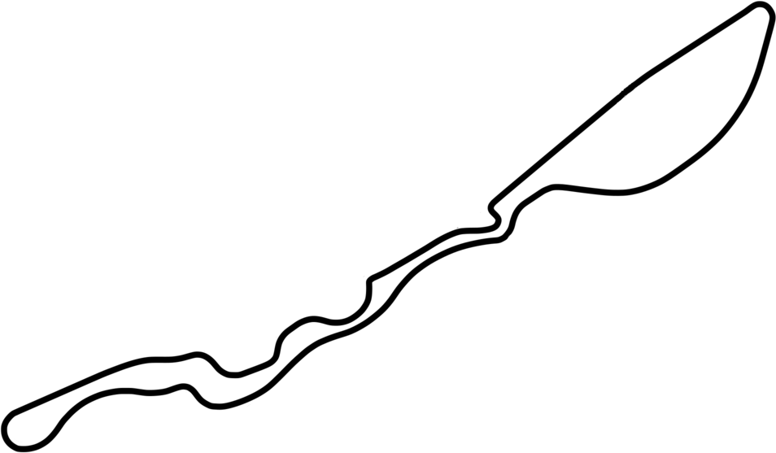
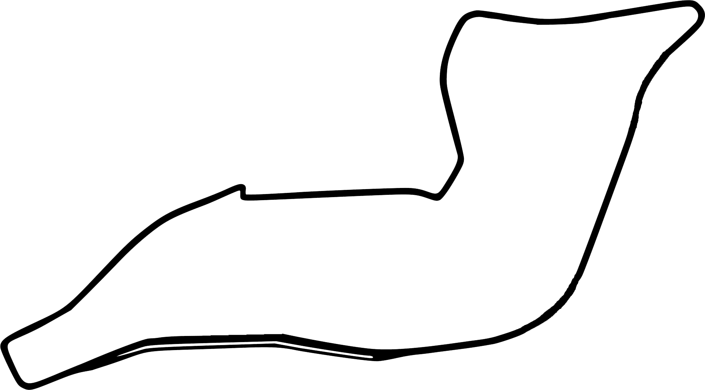
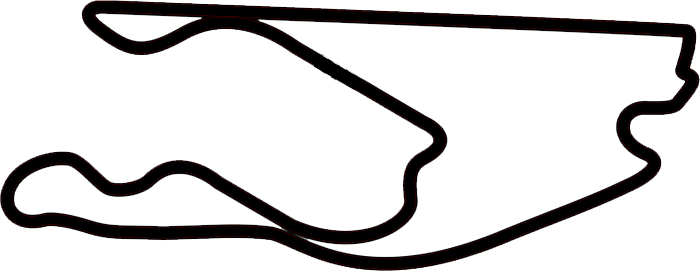
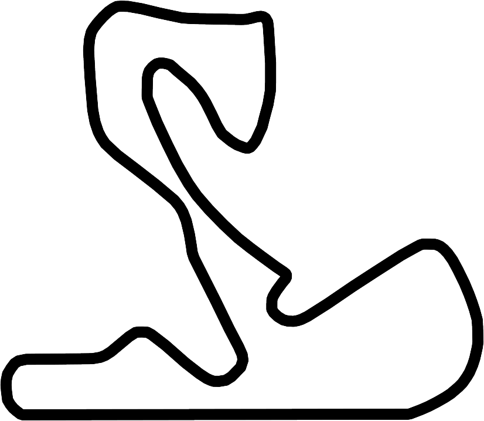
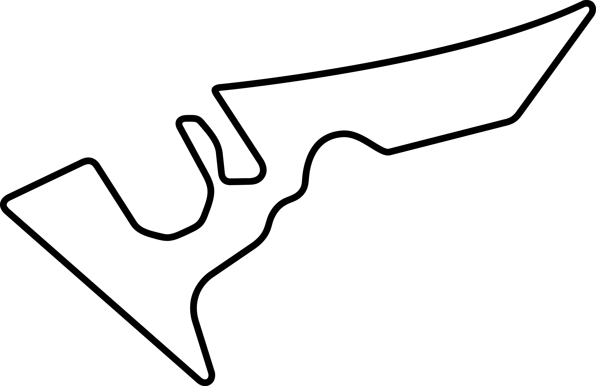

2022
ROUND 1
Bahrain International Circuit
First GP 2004
57 Laps 5.412km
Last Winner L.Hamilton
2022
ROUND 2
Jeddah Corniche Circuit

First GP 2021
50 Laps 6.174km
Last Winner L.Hamilton
2022
ROUND 3
Melbourne Albert Park Circuit
First GP 1996
58 Laps 5.303km
Last Winner V.Bottas
2022
ROUND 4
Autodromo Enzo & Dino Ferrari

First GP 1980
63 Laps 4.909km
Last Winner M.Verstappen
2022
ROUND 5
Miami International Autodrome

First GP 2022
57 Laps 5.410km
Last Winner TBD
2022
ROUND 6
Circuit de Barcelona-Catalunya
First GP 1991
66 Laps 4.675km
Last Winner L.Hamilton
2022
ROUND 7
Circuit de Monaco
First GP 1950
78 Laps 3.337km
Last Winner M.Verstappen
2022
ROUND 8
Baku City Circuit
First GP 2017
51 Laps 6.003km
Last Winner S.Pérez
2022
ROUND 9
Circuit Gilles Villeneuve
First GP 1978
70 Laps 4.361km
Last Winner L.Hamilton
2022
ROUND 10
Silverstone Circuit
First GP 1950
52 Laps 5.891km
Last Winner L.Hamilton
2022
ROUND 11
Red Bull Ring
First GP 1970
71 Laps 4.318km
Last Winner M.Verstappen
2022
ROUND 12
Circuit Paul Ricard
First GP 1971
53 Laps 5.842km
Last Winner M.Verstappen
2022
ROUND 13
Hungaroring
First GP 1986
53 Laps 4.381km
Last Winner E.Ocon
2022
ROUND 14
Circuit de Spa-Francorchamps
First GP 1950
44 Laps 7.004km
Last Winner M.Verstappen
2022
ROUND 15
Circuit Zandvoort

First GP 1952
72 Laps 4.259km
Last Winner M.Verstappen
2022
ROUND 16
Autodromo Nazionale Monza
First GP 1950
53 Laps 5.793km
Last Winner D.Ricciardo
2022
ROUND 17
Kyalami Grand Prix Circuit
First GP 1961
72 Laps 4.529km
Last Winner A.Prost
2022
ROUND 18
Marina Bay Street Circuit
First GP 2008
61 Laps 5.063km
Last Winner S.Vettel
2022
ROUND 19
Suzuka International Racing Course
First GP 1963
53 Laps 5.807km
Last Winner V.Bottas
2022
ROUND 20
Circuit of the Americas

First GP 2012
56 Laps 5.5513km
Last Winner M.Verstappen
2022
ROUND 21
Autódromo Hermanos Rodríguez
First GP 1962
71 Laps 4..04km
Last Winner M.Verstappen
2022
ROUND 22
Autódromo Interlagos
First GP 1973
71 Laps 4.309km
Last Winner L.Hamilton
2022
ROUND 23
Yas Marina Circuit
First GP 2009
58 Laps 5.281km
Last Winner M.Verstappen